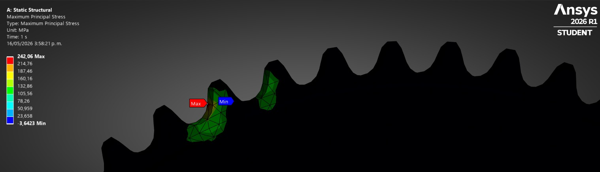

Proyecto destacado
Catarina híbrida metal–fibra de carbono para bicicleta de pista

Objetivo y concepto
Desarrollo de una catarina para bicicletas de pista, intentando integrar materiales compuestos. La pieza debía resistir las cargas de un sprint, durar 15.000 km y tener una estética llamativa, manteniendo el perfil de diente estándar de pista.
El diseño de esta pieza se puede separar en dos funciones:
Función mecánica: los dientes y un esqueleto estructural en aluminio 7075-T6, donde el metal debía cumplir por sí solo con la resistencia a fatiga y al desgaste, sin depender de la fibra de carbono.
Función estética: una cascarilla de fibra de carbono sobre el esqueleto, que da el aspecto visual característico del material sin tener un papel estructural principal.
Esta separación permite verificar el diseño mecánico únicamente con el metal, que es la condición más exigente, y deja la parte estética libre para modificarse o retirarse sin afectar la resistencia de la pieza.
Para integrar la cascarilla con el esqueleto se evaluaron dos opciones: la unión con adhesivo, en la que la cascarilla se fabrica por separado y se pega al esqueleto, y la producción directa sobre el esqueleto, en la que la fibra se lamina y se cura sobre él. En ambos casos el requisito es que la cascarilla quede unida sin interferir con los dientes ni con la zona de montaje.
Requerimientos
- Transmisión de 58 dientes con cadena de 1/2" × 1/8".
- Montaje con BCD de 144 mm y 5 tornillos.
- Cargas de diseño: torque máximo en sprint, carga cíclica (fatiga) e impactos por tirones de cadena.
- Vida útil de 15.000 km.
- Alta resistencia a fatiga y al desgaste.
- Perfil de diente estándar de pista.
- Estética llamativa.
Geometría
Calculé el perfil del diente con las relaciones de ASME B29.1, a partir de la cadena (paso de 12,7 mm y rodillo de 7,92 mm). Estos son los parámetros principales:
| Parámetro | Resultado |
|---|---|
| Paso de cadena (p) | 12,7 mm |
| Diámetro del rodillo (d1) | 7,92 mm |
| Número de dientes (z) | 58 |
| Diámetro primitivo | 234,6 mm |
| Diámetro de raíz | 226,7 mm |
| Diámetro exterior | 240 mm (rango calculado: 239,0–242,5 mm) |
| Altura del diente sobre el polígono primitivo (k) | 2,39–4,15 mm |
| Radio de asiento del rodillo (r1) | 4,00–5,19 mm |
| Ángulo de contacto del rodillo (χ) | 118,4°–138,4° |
| Espesor de diente | 2,95 mm |
| Ancho interno de la cadena | 3,175 mm |
| Holgura de entrada de la cadena | 0,22 mm |
| Chaflán lateral del diente | 1,27–1,9 mm a 45° |
| Diámetro de alivio | 202,4 mm |
El espesor de diente se tomó como el 93 % del ancho interno de la cadena (valor recomendado para catarinas simples con paso menor o igual a 12,7 mm), lo que deja 0,22 mm de holgura para que la cadena entre sin atascarse. El diámetro exterior adoptado queda dentro del rango calculado.
El diámetro de alivio define hasta dónde se puede vaciar el cuerpo del plato sin invadir la zona de dientes. En el modelo CAD, el esqueleto aprovecha ese espacio con orificios de tamaño decreciente distribuidos en arcos, además de los 5 agujeros del montaje con BCD de 144 mm.
Cargas de diseño
Modelé un sprint con 1.600 W de potencia pico a 75 km/h, rueda 700c y piñón de 14 dientes. Con esos datos obtuve las cargas sobre la transmisión:
| Parámetro | Valor |
|---|---|
| Potencia pico en sprint | 1.600 W |
| Velocidad máxima en pista | 75 km/h (20,8 m/s) |
| Rueda | 700c (diámetro con llanta de 0,668 m) |
| Piñón | 14 dientes (relación 58/14 ≈ 4,14) |
| Velocidad angular del plato | 15,06 rad/s |
| Torque en el plato | 106,3 N·m |
| Fuerza de cadena nominal | 906 N |
| Fuerza de cadena pico (factor 1,5) | 1.359 N |
- Carga pico de 1.359 N para la verificación estática. Incluye un factor de 1,5 para cubrir los tirones de cadena y el esfuerzo adicional del ciclista.
- Carga nominal de 906 N para la verificación por fatiga. Es la carga que se repite en cada pedalada; los impactos son eventos ocasionales y se cubren en la verificación estática.
- Reparto asumido de carga entre dientes: 70/30. El diente más cargado recibe el 70 % (951 N con la carga pico) y el siguiente el 30 % (408 N).
Material
Elegí aluminio 7075-T6 por su alta relación resistencia/peso. Propiedades usadas en los cálculos:
| Propiedad | Valor |
|---|---|
| Resistencia última (Su) | 572 MPa |
| Resistencia a la fluencia (Sy) | 503 MPa |
| Resistencia última a cortante | 331 MPa |
| Módulo de Young (E) | 71,7 GPa |
| Módulo de corte (G) | 26,9 GPa |
| Resistencia a la fatiga (Sf) | 159 MPa (a 5×108 ciclos) |
Verificación estática
Traté el diente como el de un engrane y calculé el esfuerzo en la raíz con la teoría de Lewis, usando un módulo equivalente (p/π) y un factor de forma interpolado para z = 58:
σ = Wt / (F · m · Y · Kv)
donde Wt es la carga tangencial, F el ancho del diente (2,95 mm), m el módulo equivalente, Y el factor de forma y Kv el factor de velocidad de Barth, que aumenta el esfuerzo por efectos dinámicos.
| Parámetro | Resultado |
|---|---|
| Módulo equivalente (m) | 4,04 mm |
| Factor de forma de Lewis (Y) | 0,408 |
| Velocidad en el diámetro primitivo | 1,77 m/s |
| Factor de velocidad (Kv) | 0,775 |
| Esfuerzo con un solo diente (1.359 N) | 360 MPa |
| Esfuerzo en el diente más cargado (951 N) | 252 MPa |
| Esfuerzo admisible (Sy/1,2) | 419 MPa |
| Factor de seguridad respecto a la fluencia | ≈ 2,0 |
Verificación por fatiga
Para la fatiga consideré una carga repetida: el esfuerzo mínimo es cero y el esfuerzo medio es igual al alternante. Corregí el límite de fatiga del aluminio 7075-T6 con los factores de Marín (superficie, tamaño, temperatura y confiabilidad del 95 %) y calculé el factor de seguridad con el criterio de Goodman modificado.
| Parámetro | Resultado |
|---|---|
| Carga en el diente más cargado (906 N × 70 %) | 634 N |
| Esfuerzo máximo (σmáx) | 168 MPa |
| Esfuerzo medio y alternante (σm = σa) | ≈ 84 MPa |
| Límite de fatiga del material (S′e) | 159 MPa |
| Factor de superficie (ka, maquinado) | 0,838 |
| Factor de tamaño (kb) | 1,104 |
| Factor de temperatura (kd) | 1,0 |
| Factor de confiabilidad (ke, 95 %) | 0,868 |
| Límite de fatiga corregido (Se) | 128 MPa |
| Factor de seguridad (Goodman modificado) | 1,24 |
| Vida de diseño | 15.000 km ≈ 20,4 millones de revoluciones del plato |
El margen de fatiga es ajustado y es la parte más sensible del diseño: depende del reparto de carga entre dientes (70/30) y de usar la carga nominal en lugar de la pico.
Validación por elementos finitos
Para contrastar el cálculo analítico modelé un sector de dientes en Ansys con una carga de 951 N sobre el diente más cargado, que corresponde al 70 % de la carga pico de 1.359 N.


El esfuerzo principal máximo es de 242 MPa y se concentra en la raíz del diente cargado, la zona crítica prevista por la teoría de Lewis. Es cercano a los 252 MPa calculados analíticamente (una diferencia de 4 %) y deja un factor de seguridad de aproximadamente 2,1 respecto a la fluencia del material (503 MPa).
La deformación máxima es de 0,048 mm y se ubica en la punta del diente. Equivale a menos del 0,4 % del paso de la cadena, por lo que el diente es suficientemente rígido para mantener el engrane bajo la carga de diseño.
Conclusiones
- El diseño cumple los requerimientos de partida: 58 dientes, cadena de 1/2" × 1/8", BCD de 144 mm con 5 tornillos y perfil de diente estándar de pista.
- Separar la función mecánica (aluminio 7075-T6) de la estética (fibra de carbono) permitió verificar la pieza solo con el metal, la condición más exigente.
- Las tres verificaciones se respaldan entre sí: la teoría de Lewis (252 MPa) y el análisis por elementos finitos (242 MPa) coinciden con una diferencia de 4 %, y la fatiga da un factor de seguridad de 1,24 para la vida de 15.000 km.
- El margen de fatiga es ajustado, por lo que los supuestos de carga y de reparto entre dientes deben validarse con una simulación dinámica y con ensayos.
- El diseño todavía se puede optimizar, por ejemplo en el aligeramiento del esqueleto, el espesor del diente y la integración de la cascarilla.
Trabajo futuro
- Simulación dinámica del conjunto catarina–cadena–piñón, para calcular la carga real en cada diente, el reparto entre los dientes en contacto y el efecto de los tirones de cadena, en lugar de asumir el reparto 70/30 y el factor de impacto de 1,5.
- Fabricación de un prototipo y ensayo en banco, para contrastar los resultados de los modelos con el comportamiento real.
- Refinamiento de la malla en la raíz del diente y estudio de convergencia.
- Evaluación del desgaste, mediante un análisis de presión de contacto o un tratamiento superficial del diente, y del método de unión entre aluminio y fibra de carbono (adhesivo o producción directa sobre el esqueleto).
Herramientas
Autodesk Inventor · Ansys · Excel · Teoría de Lewis · ASME B29.1 · Criterio de Goodman modificado · Factores de Marín · Análisis de fatiga